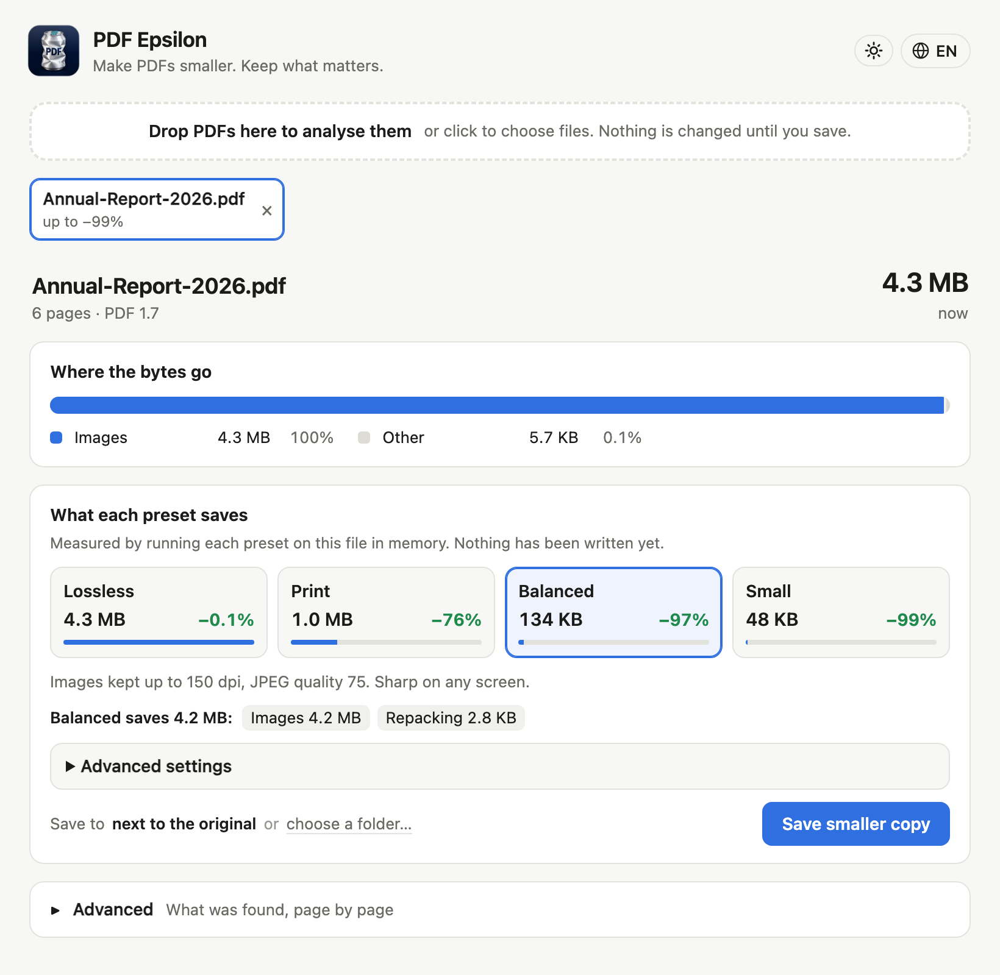
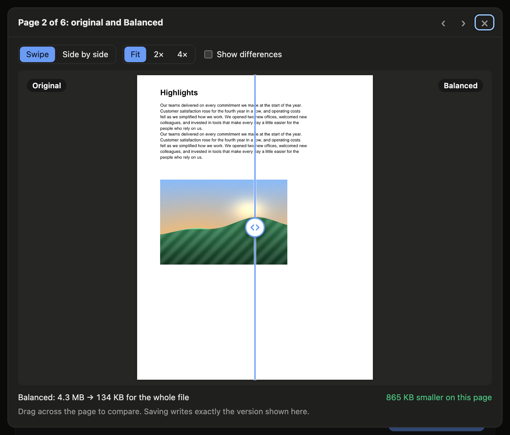

Where the bytes go
Every byte counted, for the whole file and each page.
See why a PDF is heavy, page by page, and make it lighter on your own computer. Not a word changes.

Every byte counted, for the whole file and each page.
Each preset runs on your file first. The size you see is the size you get.
Drag across any page to see the original against the smaller copy.
Photos become efficient JPEGs. Charts and screenshots stay lossless.
Only the letters in use are kept. One file went from 15 MB to 80 KB.
Works offline, and leaves alone anything it doesn’t fully understand.
Balanced preset. Text and pages unchanged.

Each page as it is and as it will be saved. What you compare is exactly what gets written.
Free for macOS, Windows and Linux.
Apple menu → About This Mac: “Chip” is Apple silicon, “Processor” is Intel.
Move it to Applications and open it. If macOS can’t verify it, go to System Settings → Privacy & Security → Open Anyway. Only once.
Windows 10 and 11, 64-bit.
If SmartScreen appears, click More info, then Run anyway.
For the .deb, run sudo apt install ./PDF-Epsilon-Linux.deb in the folder you downloaded it to. For the AppImage, run chmod +x PDF-Epsilon-Linux.AppImage, then open it.